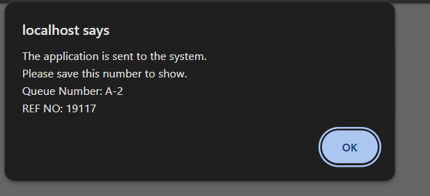
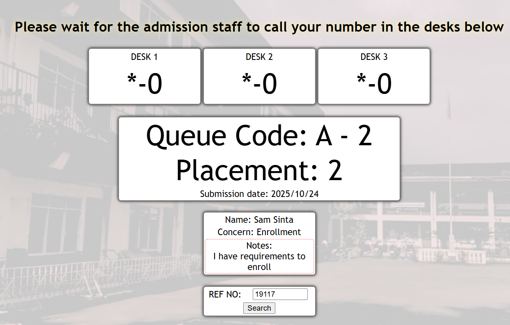

IskaPila Help Information |

|
How to enter admission queue?
- Click apply queue in the tabs or in the menu
- Fill your credentials legally
- Choose your concern type of the following:
- Enrollment - enrollment related inquiries / admission for freshmen
- Non-issuance ID - getting other ID alternative for non-issued students
- CTC of COR - certifying certificate of registration as certified true copy
- Scholarship - for inquiring scholarship needs and financial assistance
- TOR / Diploma - graduation/post-graduate documents
- Others - other admission related inquiries
- You can add your notes for more clarification
- Submit it when all the forms is already filled out
|
- Upon sumbitting the application this notification pops up
- You should save the information here for reference and proof
- By clicking ok, you are redirected to queue viewer
|

|
|

|
Wait for the staff to call you
- The queue viewer show you the queue information and the placement after exiting the notification
- You can also search other queues code's placement using the reference number generated by the system
- Upon called your queue code from the desk, you can approach a desk admission representative to confim
- You can remind them about your concern that relates to concern type
- If you have changed your mind and want to leave the queue, they will drop the call of your queue code and call the next one.
|